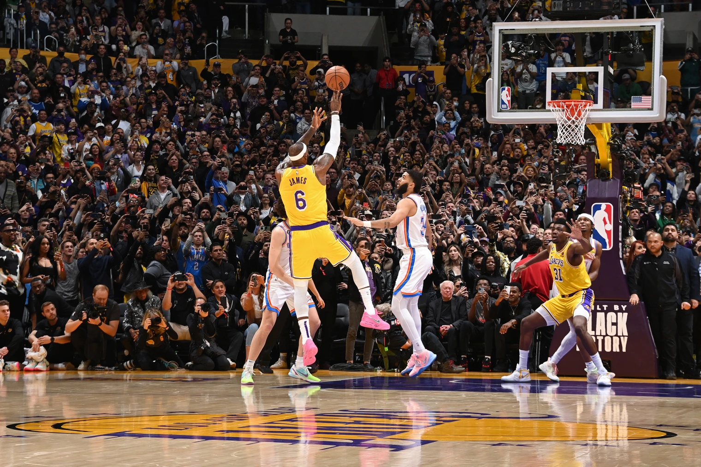
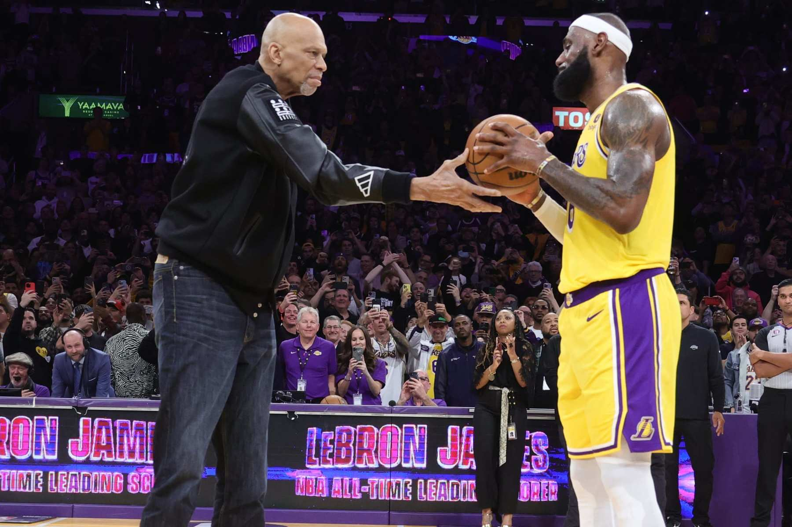
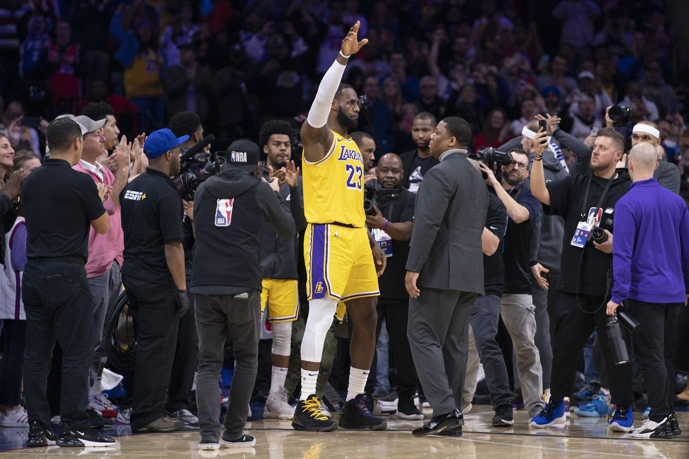

On Tuesday February 7th, James sank a 21-foot turnaround with 10.9 seconds left in the third quarter at Crypto.com Arena, giving him 16 points in the period, the necessary 36 for the game and 38,388 for his illustrious career - now more than any other player in NBA history.
"I never thought anybody could beat Kareem's record, "Magic Johnson said during a congratulatory clip, speaking for most NBA observers.
But James, who also played multiple stints in Cleveland bracketing a stretch in Miami, has followed the same path as his fellow Lakers star with consistent, high-level excellence and historic longevity. With double-figure points in all but eight career games, and scoring averages of at least 25 points per game in all 19 seasons since his rookie campaign in 2003-04, James consistently chipped away at the standard Abdul-Jabbar initially set in 1984 and continued to build on until his retirement in 1989.
"To be in the presence of such a legend and great as Kareem, it means so much to me. It's very humbling" James said as the game was stopped for a brief ceremony at center court. "To everybody who's ever been a part of this run with me the last 20 years, I just want to say thank you so much."
The current NBA scoring list order is as follows (Thu Feb 9):
LeBron James played has played on 3 different teams in his career. He returned to the Cavaliers after leaving in 2010. These are the point totals he reached for each team.
| Team | Years | Points Toal |
|---|---|---|
| Cleavland Cavaliers | 2003-2010 | 15,251 |
| Miami Heat | 2010-2014 | 7,919 |
| Cleavland Cavaliers | 2014-2018 | 7,868 |
| Los Angeles Lakers | 2018-Present | 7,352 |
For More Information: LeBron Twitter LeBron's Website